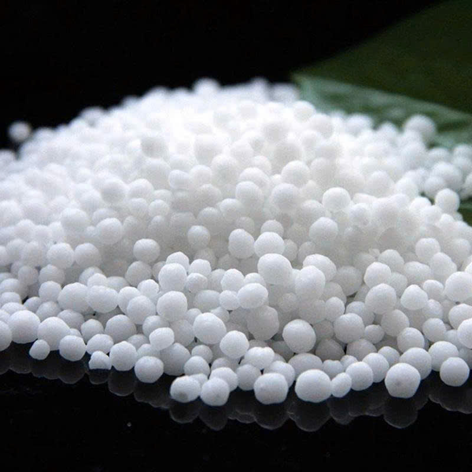
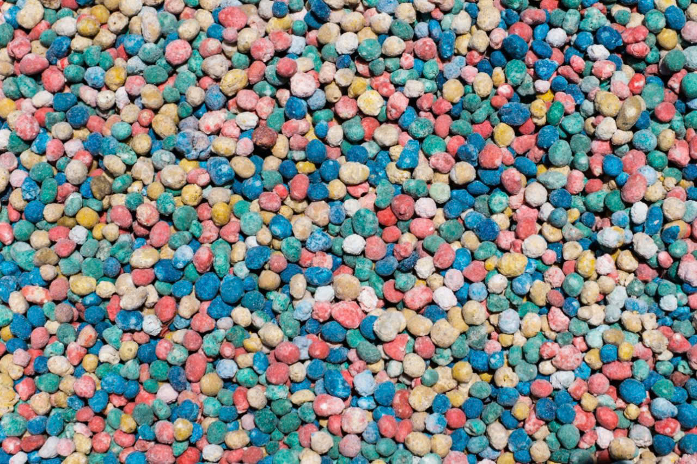
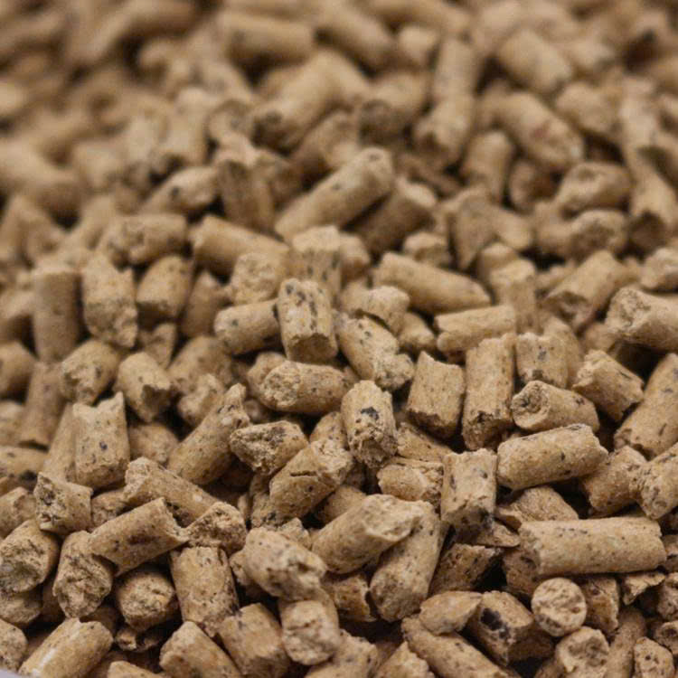

Bài thuyết trình nhóm • Tổ 1
Phân Bón
Nguồn dinh dưỡng nuôi dưỡng đất đai, thúc đẩy sự sống cây trồng và kiến tạo nền nông nghiệp xanh bền vững.
Thành viên
Tổ 1
Mười thành viên cùng nghiên cứu, tổng hợp nội dung và hoàn thiện bài thuyết trình.
Khái niệm phân bón
“Phân bón là sản phẩm có chứa các chất dinh dưỡng cần thiết cho cây trồng.”
Được sử dụng để bổ sung dinh dưỡng cho đất và cây.
Giúp cây sinh trưởng, phát triển tốt và tăng năng suất.
Phân loại phân bón
Phân bón được chia thành 3 nhóm chính:
Phân bón hữu cơ
Bắt nguồn từ tự nhiên, nuôi dưỡng độ màu mỡ và cấu trúc tơi xốp của đất.
Phân bón hóa học (vô cơ)
Sản xuất theo quy trình công nghiệp, cung cấp dưỡng chất trực tiếp, tác động nhanh.
Phân bón vi sinh
Chứa các chủng vi sinh vật có ích giúp chuyển hóa và giải phóng dinh dưỡng trong đất.
Phân bón hữu cơ
Có nguồn gốc từ chất thải động vật, thực vật và các chất hữu cơ.
Giúp cải tạo đất, tăng độ tơi xốp.
Bổ sung chất hữu cơ và dinh dưỡng cho đất.

huuco.jpg
Đặt file ảnh huuco.jpg cùng thư mục với file HTML để tự động hiển thị.
Hình 1. Các nguồn phân bón hữu cơ tự nhiên
Phân bón hóa học
• Được sản xuất bằng phương pháp công nghiệp.
• Chứa các chất dinh dưỡng ở dạng cây dễ hấp thụ, giúp cây phát triển nhanh và tăng năng suất.

voco.jpg
Đặt file ảnh voco.jpg cùng thư mục với file HTML để tự động hiển thị.
Hình 2. Phân bón hóa học (vô cơ) dạng hạt
Phân bón vi sinh
Chứa các vi sinh vật có ích.
Giúp phân giải chất hữu cơ và chuyển hóa chất dinh dưỡng.
Hỗ trợ cây hấp thụ dinh dưỡng tốt hơn.
Góp phần cải thiện độ phì nhiêu của đất.

visinh.jpg
Đặt file ảnh visinh.jpg cùng thư mục với file HTML để tự động hiển thị.
Hình 3. Phân bón vi sinh và hệ vi sinh vật có ích trong đất
Vai trò của phân bón
Cung cấp chất dinh dưỡng cho cây trồng.
Thúc đẩy quá trình sinh trưởng và phát triển.
Tăng năng suất và chất lượng nông sản.
Cải thiện độ phì nhiêu của đất.
Cách sử dụng phân bón
Sử dụng đúng loại phân phù hợp với cây trồng.
Bón đúng liều lượng.
Bón đúng thời điểm.
Bón đúng phương pháp.
Tác hại khi
lạm dụng phân bón
Việc sử dụng quá mức, thiếu kiểm soát sẽ phá vỡ cân bằng tự nhiên của hệ sinh thái nông nghiệp.
Làm đất bị chai cứng, thoái hóa.
Gây ô nhiễm nguồn nước và môi trường.
Làm mất cân bằng dinh dưỡng trong đất.
Ảnh hưởng đến sự phát triển của cây trồng.
Kết luận
Phân bón đóng vai trò quan trọng trong sản xuất nông nghiệp.
Cần sử dụng phân bón hợp lý và tiết kiệm.
Kết hợp các loại phân bón phù hợp.
Góp phần bảo vệ môi trường và phát triển nông nghiệp bền vững.